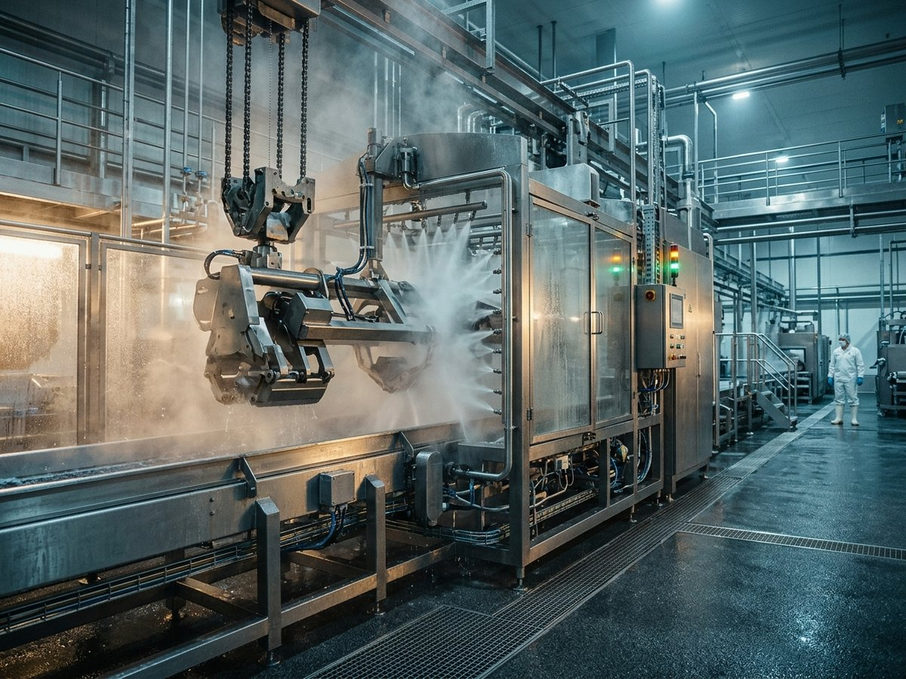
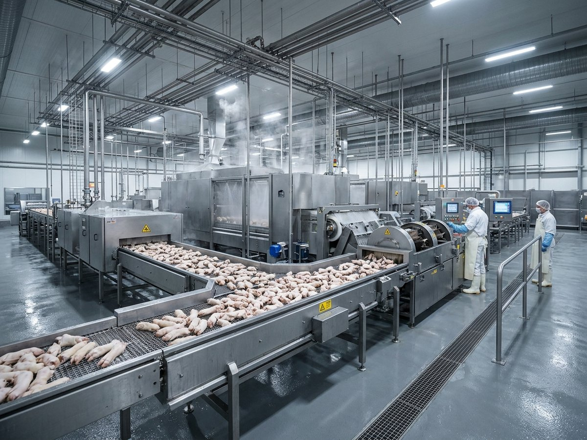
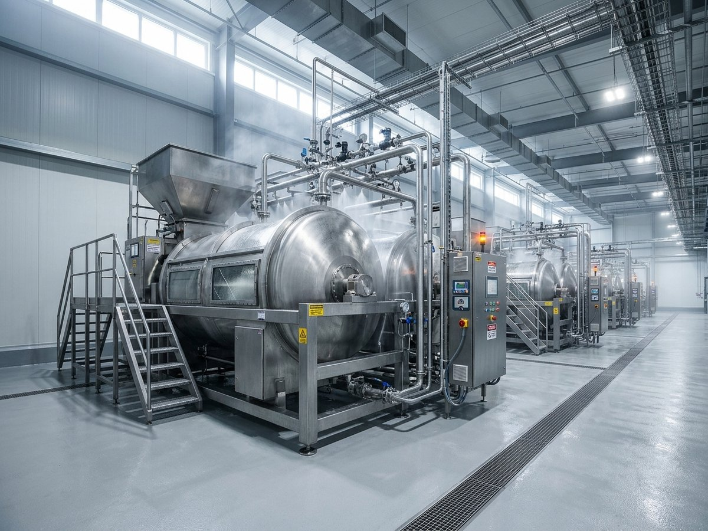
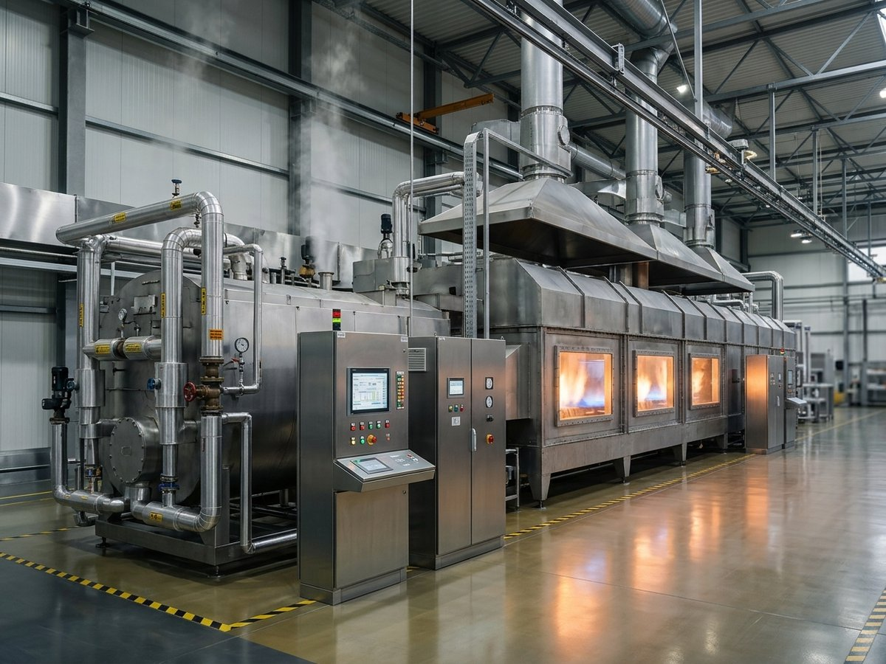

01
ماكينة تنظيف الرؤوس المتقدمة
قطر 1 متر، غطاء محكم، محرك بقدرة 5.5 كيلوواط
بقطر 1 متر وغطاء محكم الإغلاق، ونظام كشط دوراني مصمّم خصيصًا للزوايا المعقدة، يديره محرك بقدرة 5.5 كيلوواط.
تقنيات صناعية متطورة بأقصى طاقة وأقل نسبة هدر
يستثمر مصنع بيور ميت في أحدث التقنيات الصناعية المصنوعة من الفولاذ المقاوم للصدأ (ستانلس ستيل 400، ثلاثي الطور)، لتأمين أقصى طاقة إنتاجية بأقل نسبة هدر.

بقطر 1 متر وغطاء محكم الإغلاق، ونظام كشط دوراني مصمّم خصيصًا للزوايا المعقدة، يديره محرك بقدرة 5.5 كيلوواط.

خط متكامل بطاقة إنتاجية مذهلة تصل إلى 3,000 قطعة في الساعة.

بسرعة قرص تصل إلى 230 دورة في الدقيقة وطاقة إنتاجية من 300 إلى 550 قطعة في الساعة، وبهيكل قوي يضمن الاستقرار واهتزازًا مدروسًا.

يولّد البخار بسعة تبخير 100 كجم في الساعة، وتعمل الأفران بنظام المبخّر (Vaporizer) لضمان ثبات اللهب وقوته واستمرارية الإنتاج دون انقطاع.
كل معدة في مصنعنا صُمّمت لغاية واحدة: أن يصل المنتج بأعلى درجات النقاء والاتساق.
يعتمد مصنعنا على هندسة مكانية وتصميم تشغيلي فريد يضمن فصلًا تامًا بين المسارات: منطقة الاستلام والمعالجة الأولية من جهة، والمنطقة النظيفة من جهة أخرى؛ تفاديًا لأي تلوث تبادلي. وتمرّ العمليات عبر المراحل الآتية:
نستقبل المواد الخام من المسالخ المعتمدة، ونُخضعها فورًا لفحص بصري وفيزيائي دقيق، ونستبعد أي مواد غير مطابقة للمواصفات. وتُخزَّن المواد المقبولة مباشرة في ثلاجات مضبوطة الحرارة بين 1 و4 درجات مئوية.
تُنقع المواد في مياه نقية، ثم تدخل ماكينات السمط المتطورة المزوّدة ببخار دقيق يحافظ على درجات حرارة تتراوح بين 60 و65 درجة مئوية لمدة محددة، لتليين بصيلات الشعر وإرخائها بفعالية.
يُزال الشعر آليًا بسكاكين حادة، ثم تمرّ المنتجات سريعًا عبر أفران اللهب العاملة بغاز البترول المسال (LPG) لمدة لا تزيد عن 30 ثانية؛ للتخلص من أي شعيرات دقيقة وتسهيل إزالة الأظافر بإتقان.
تُغسل المنتجات داخل ماكينات خاصة باستخدام محاليل الخل الغذائي بتركيز 2% أو الملح الخشن بتركيز 3%، مع فرش خشنة متخصصة؛ لإزالة آثار الحرق واستعادة المظهر الأبيض الناصع والأخّاذ للمنتج.
تُحفظ المنتجات في صناديق صحية داخل غرف تبريد تتراوح حرارتها بين 1 و4 درجات مئوية، لمدة لا تقل عن 24 ساعة؛ لضمان استقرار الأنسجة قبل مرحلة الشحن والتغليف.
نشحن المنتجات عبر أسطول من المركبات المبرّدة المرخّصة رسميًا، يحافظ على درجات الحرارة المثلى حتى لحظة التسليم لعملائنا في قطاعي التموين والتجارة.
| المرحلة | نقطة التحكم | المعيار الرئيسي |
|---|---|---|
| 1. الاستلام الفيزيائي الدقيق | CCP1 | تخزين فوري، من 1 إلى 4 درجات مئوية |
| 2. النقع الأولي والسمط الحراري الآلي | CCP2 | من 60 إلى 65 درجة مئوية |
| 3. الكشط الهندسي والحرق الآمن | CCP3 | لهب LPG لمدة لا تزيد عن 30 ثانية |
| 4. التنظيف النهائي والتعقيم الذكي | — | خل غذائي 2% أو ملح خشن 3% |
| 5. التبريد التخزيني الاستراتيجي | CCP4 | من 1 إلى 4 درجات مئوية، 24 ساعة كحد أدنى |
| 6. سلسلة التبريد والنقل والتوزيع | — | أسطول مبرّد ومرخّص رسميًا |
نعمل بالتنسيق التام والالتزام بالاشتراطات الفنية الصادرة عن هيئة أبوظبي للزراعة والسلامة الغذائية وهيئة البيئة – أبوظبي، لضمان بيئة صناعية مستدامة وآمنة.